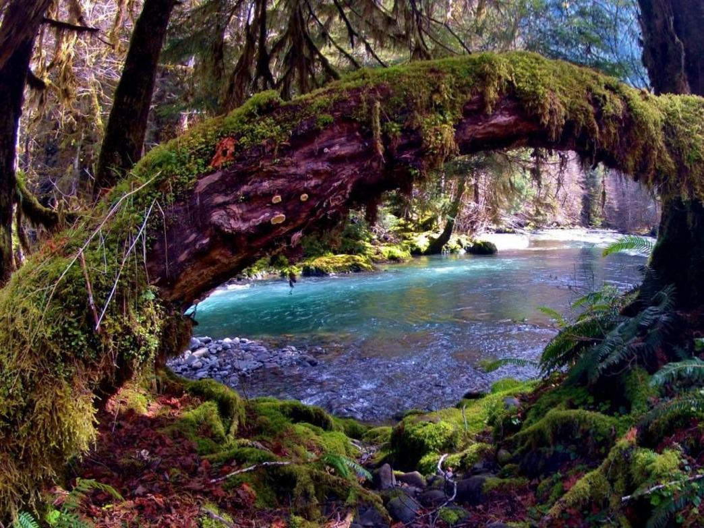

Olympic National Park is on Washington's Olympic Peninsula in the Pacific Northwest. The park sprawls across several different ecosystems, from the dramatic peaks of the Olympic Mountains to old-growth forests. The summit of glacier-clad Mt. Olympus is popular with climbers, and hiking and backpacking trails cut through the park's rainforests and along its Pacific coastline.
